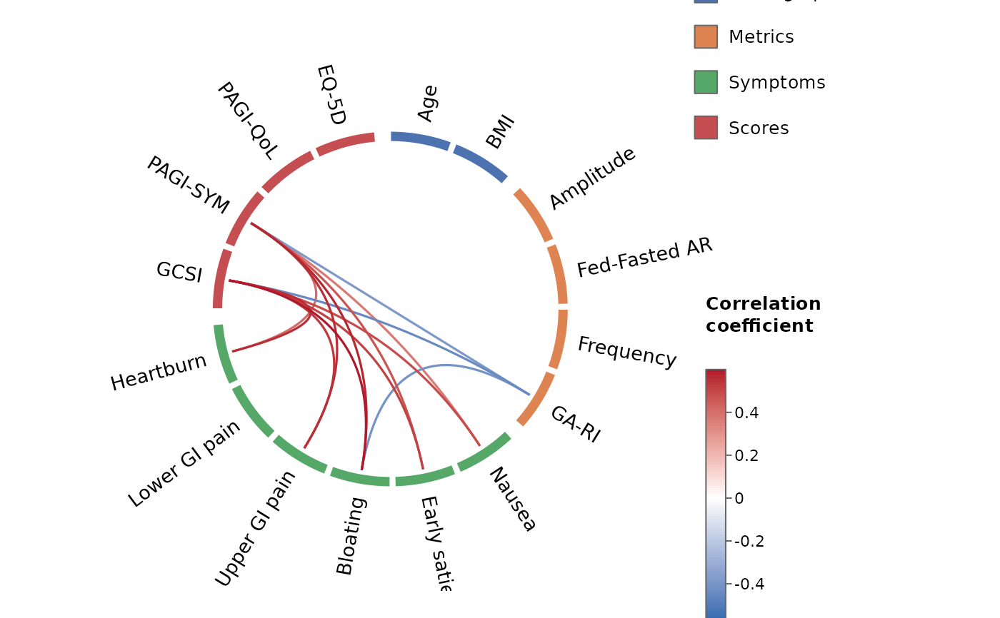

Arranges variables around a circle, grouped and colour-tiled by category, and connects them with curved links whose colour maps to the correlation coefficient. Non-significant, weak, and (optionally) within-category correlations are masked. This reproduces the MNE-style "connectivity circle" natively in R using circlize.
Usage
corr_wheel(
r,
p = NULL,
groups = NULL,
colors = NULL,
labels = NULL,
order = NULL,
sig_level = 0.05,
r_threshold = 0,
hide_within_group = TRUE,
method = c("pearson", "spearman", "kendall"),
adjust = "holm",
use = "pairwise.complete.obs",
p_from = c("lower", "upper"),
r_limits = c(-0.5, 0.5),
palette = c("#2166AC", "#FFFFFF", "#B2182B"),
start_degree = 90,
group_gap = 5,
node_gap = 1.5,
link_lwd = 1.6,
sort_links = TRUE,
tile_height = 0.06,
label_cex = 0.85,
label_pad = 0.45,
label_r_offset = 0.07,
tile_border = "white",
title = NULL,
legend = TRUE,
colorbar = TRUE,
legend_title = "Category",
colorbar_title = "Correlation\ncoefficient"
)Arguments
- r
One of three things, auto-detected:
raw data – a data frame or matrix with one row per observation (e.g. one row per patient) and variables in columns. Correlations and p-values are computed for you via
compute_correlations()usingmethod,adjust, anduse. This is the simplest entry point.a correlation matrix (square, with variable names as dimnames), or a data frame of one; pass matching p-values via
p.a
"circlecor"object fromcompute_correlations(); itspmatrix is used and thepargument is ignored.
When
groupsis supplied, only the variables it names are used (in that order), so extra columns such as IDs are simply ignored.- p
Optional matching matrix of p-values. If supplied, links with
p > sig_levelare hidden. Ignored for raw data and"circlecor"inputs (computed instead).- groups
Category assignment for the variables. Either a named vector (
variable = category) or a named list (category = c(variables)). The order of categories here sets their order around the wheel. IfNULL, all variables share one group.- colors
Named vector mapping category to colour. Missing categories are filled from a default palette.
- labels
Named vector mapping variable name to a display label. Missing entries fall back to the variable name.
- order
Optional character vector giving an explicit variable order around the wheel. Overrides ordering by
groups. Must contain every variable.- sig_level
Significance threshold; links with
p > sig_levelare hidden. Only used when a p-value matrix is available.- r_threshold
Minimum absolute correlation to display.
- hide_within_group
Logical; if
TRUE(default) correlations between two variables in the same category are hidden – and excluded from the multiple-comparison family (see Details). Self-correlations (the diagonal) are always excluded.- method, use
Passed to
compute_correlations()whenris raw data: the correlation method and the missing-value handling. Ignored otherwise.- adjust
Multiple-comparison adjustment method applied to the raw p-values over the displayed family of correlations (see Details). Any method accepted by
stats::p.adjust()(e.g."holm","hochberg","BH","bonferroni","none"). Used only when the p-values are raw (raw-data or"circlecor"input); a user-suppliedpmatrix is taken as given.- p_from
When a p-value matrix is asymmetric (as from
psych), which triangle to mirror:"lower"(raw p-values, the default) or"upper"(adjusted).- r_limits
Length-2 numeric giving the colour-scale limits (
c(vmin, vmax)). Correlations beyond these are clamped for colour.- palette
Colours for the diverging link scale at
c(r_limits[1], midpoint, r_limits[2]). Default is a blue-white-red scale.- start_degree
Angle (degrees) of the first variable; 90 places it at the top, going clockwise.
- group_gap, node_gap
Gaps (degrees) between categories and between variables within a category.
- link_lwd
Line width (size) of the links. Increase for thicker lines.
- sort_links
If
TRUE(default), stronger correlations are drawn last (on top).- tile_height
Radial thickness (size) of the coloured category blocks. Smaller values give thinner blocks at the rim.
- label_cex, tile_border
Label text size and tile border colour.
- label_pad
Extra canvas padding (as a fraction of the circle radius) to keep long outer labels from being clipped. Increase for longer labels.
- label_r_offset
Radial gap (in circle-radius units) between the outer edge of the tiles and the start of the labels.
- title
Optional plot title.
- legend, colorbar
Logical toggles for the category legend and the correlation colour bar.
- legend_title, colorbar_title
Titles for the legend and colour bar.
Value
Invisibly, a list with the ordered vars, resolved groups,
colors, the col_fun colour mapping, the masked matrix of correlations
actually drawn (others NA), the family-adjusted p-value matrix
p_adjusted, the number of drawn links n_links, the size of the
comparison family n_tests, and the adjust method applied.
Details
A traditional correlation matrix is dominated by redundant information: the diagonal of self-correlations, the mirror-image lower triangle, and blocks of within-category correlations that are rarely of interest. The wheel keeps only the correlations you actually want to inspect – by default the between-category correlations, with self- and within-category correlations hidden.
This is not only a display choice; it is carried through to the statistics.
When the p-values are computed from raw data (or supplied via a
compute_correlations() object), the multiple-comparison adjustment
(adjust) is applied over only the family of correlations shown – i.e.
excluding self- and, when hide_within_group = TRUE, within-category
correlations. Because those redundant comparisons no longer count towards the
family, the correction is less severe and statistical power improves.
Examples
grp <- list(
Demographics = c("Age", "BMI"),
Metrics = c("Amplitude", "Fed-Fasted AR", "Frequency", "GA-RI"),
Symptoms = c("Nausea", "Early satiety", "Bloating", "Upper GI pain",
"Lower GI pain", "Heartburn"),
Scores = c("GCSI", "PAGI-SYM", "PAGI-QoL", "EQ-5D")
)
# Simplest: straight from a per-row data frame (correlations computed for you)
data(gastro_symptoms)
if (requireNamespace("psych", quietly = TRUE)) {
corr_wheel(gastro_symptoms, groups = grp, r_threshold = 0.3,
r_limits = c(-0.6, 0.6))
}

# Or from pre-computed matrices / a circlecor object
data(gastro_cor)
corr_wheel(gastro_cor, groups = grp, r_threshold = 0.3,
r_limits = c(-0.6, 0.6))